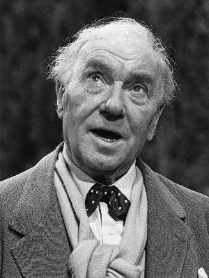
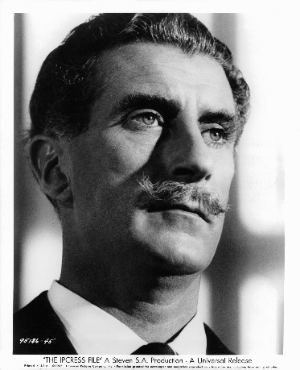
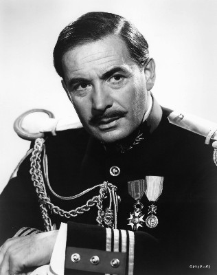

#10826 Khartoum - Aufstand am Nil
Alternativ: Khartoum (Englischer Titel)
Auszeichnungen: für 1 Oscars nominiert


 IMDB-Wertung: 6.9 / 10
IMDB-Wertung: 6.9 / 10  Metascore: 0
Metascore: 0 
Im Jahre 1883 schickt der britische Premierminister Gladstone (Ralph Richardson) den General Charles Gordon (Charlton Heston) nach Khartoum in den Sudan, da der fanatische Moslemführer, der Mahdi (Laurence Olivier), tausende Zivilisten bedroht. Gordon wird zwar vom Mahdi respektiert, kann aber dessen Gefolgschaft nicht davon abbringen, Khartoum zu belagern. Daraufhin sieht der General nur noch eine Lösung: Er muss die Stadt verteidigen. Doch die Vorräte gehen allmählich zur Neige, und die dringend geforderte Verstärkung verzögert sich…
Jahr: 1966
Dauer: 136 Minuten
FSK: 12
Land: England Studio: Artistas UnidosTonspuren:
Untertitel:
Auflösung: 1080p (1920x704) Größe: 8960 MB
Genre: Action, Drama, Abenteuer, Krieg, Geschichte
Regisseur: Basil Dearden, Eliot Elisofon
Drehbuch: Robert Ardrey
Soundtrack: Frank Cordell
Darsteller:
 Charlton Heston als Gen. Charles 'Chinese' Gordon
Charlton Heston als Gen. Charles 'Chinese' Gordon Laurence Olivier als The Mahdi
Laurence Olivier als The Mahdi Richard Johnson als Col. J.D.H. Stewart
Richard Johnson als Col. J.D.H. Stewart-  Ralph Richardson als William Gladstone
 Alexander Knox als Sir Evelyn Baring
Alexander Knox als Sir Evelyn Baring- Johnny Sekka als Khaleel
 Michael Hordern als Lord Granville
Michael Hordern als Lord Granville- Zia Mohyeddin als Zobeir Pasha
 Marne Maitland als Sheikh Osman
Marne Maitland als Sheikh Osman-  Nigel Green als Gen. Wolseley
- Hugh Williams als Lord Hartington
 Douglas Wilmer als Khalifa Abdullah
Douglas Wilmer als Khalifa Abdullah Peter Arne als Maj. Kitchener
Peter Arne als Maj. Kitchener- Michael Anthony als Herbin (uncredited)
- Roger Delgado als Sheikh Abdul Rahim (uncredited)
-  Leo Genn als Narrator (uncredited)
- Ronald Leigh-Hunt als Lord Northbrook (uncredited)
- Alec Mango als Bordeini Bey (uncredited)
- George Pastell als Giriagis Bey (uncredited)
- Jerome Willis als Frank Power (uncredited)
- Ralph Michael als Sir Charles Dilke
- Edward Underdown als Col. William Hicks
- Alan Tilvern als Awaan
- Lisa Guiraut als The Dancer (uncredited)
- David Lawton als Man (uncredited)
- Robert Rietty als Various Roles (uncredited)
Datei: X:\1966\Khartoum - Aufstand am Nil (1966, FSK12, 1920x704).mkv seit 09.03.2019
Festplatte: Gemischt-01+Anime
 Es gibt insgesamt 27 Filme in der Gruppe '1966'
Es gibt insgesamt 27 Filme in der Gruppe '1966'